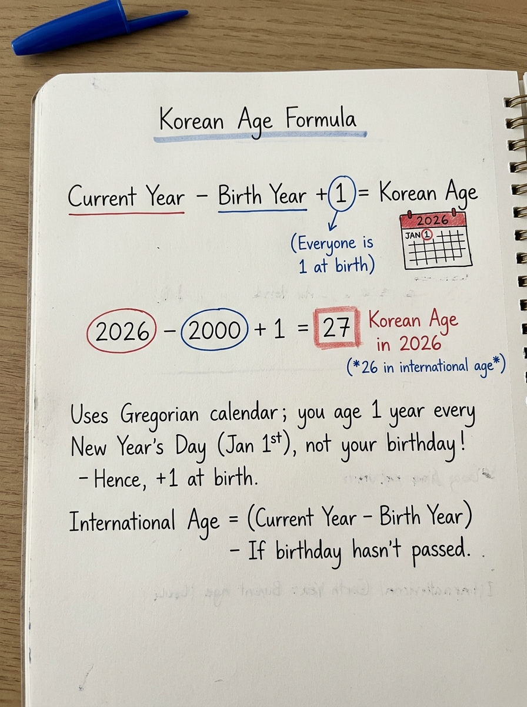

How Do You Calculate Korean Age?
To calculate traditional Korean age (세는나이 - Seneun Nai), take the current calendar year, subtract the person's birth year, and add 1:
2026 − 2000 + 1 = 27 years old in traditional Korean age.
This formula calculates the traditional cultural age. It should not be confused with the current legal standard in South Korea: on June 28, 2023, South Korea formally standardized administrative, medical, and civil records to the international full-age system (만 나이 - Man Nai). For the complete cultural background, see our pillar guide: Why is Korean age different? →
How to Calculate Korean Age Step by Step
Because traditional Korean age reckoning is strictly calendar-year driven, you do not need to look up months or days. Anyone can calculate their traditional Korean age by executing three simple arithmetic steps:
Identify the four-digit Gregorian year in which you were born. You can disregard your exact calendar month and birth date.
Identify the current ongoing calendar year. Every person across Korea increments their age together on January 1st.
Subtract your birth year from the current year, then add 1 to account for the year credited at delivery.
The resulting integer (27) represents your traditional Korean age throughout the entire year of 2026. Notice that this number remains constant from January 1st to December 31st.
Traditional Korean Age Formula
The mathematical identity governing traditional Korean age reckoning is modular and universal. Here is the formal relationship structured as an editorial equation card:
Handwritten Formula Study Notes
In classrooms, language academies, and K-drama fan communities, students frequently annotate the Korean age formula in their notebooks to quickly convert idol and character ages. Here is a clear visual summary from our calculation notebook:

Does Your Birthday Matter for Korean Age?
This is where most international learners encounter their first counter-intuitive moment: Under the traditional Korean age system, your exact day and month of birth do not matter at all.
Because traditional age (세는나이) increments universally at midnight on January 1st, everyone born in the exact same calendar year shares the exact same traditional Korean age for that entire year, regardless of whether they were born in early January or late December.
Case Study: Same Birth Year, Opposite Sides of the Calendar
Consider two people born in the year 2000:
Born: January 10, 2000
Born: December 30, 2000
While Person A and Person B have the exact same traditional Korean age (27), their international ages diverge: before December 30, Person B is still 25 in Western completed solar years, making them two full years younger in international reckoning than their Korean age!
This divergence forms the core topic of our comprehensive comparison guide: Korean age vs international age: What’s the difference? →
Two-Person Birthday Comparison Infographic
The visual below illustrates why two people born eleven months apart in the same year share identical traditional ages, while displaying divergent international ages depending on the test date:

Example: Someone Born on December 31
The starkest illustration of traditional East Asian age reckoning is the famous "December 31st baby anomaly." It answers the common question: "How could an infant become two years old within 48 hours of birth?"
The 48-Hour Age Leap
The baby is born. Under the traditional Korean count, every infant starts at age 1 at delivery.
Just 5 minutes later, the calendar year turns. Everyone gains +1 year. The baby is now 2 years old.
In the international system, the baby is less than 24 hours old and will not turn 1 until the following December 31st.
This phenomenon occurs because traditional age never counted chronological duration; it answered: "What calendar year of life is this person experiencing?" The child lived during 1999 (Year 1) and was living during 2000 (Year 2). To explore the cultural philosophy behind this reckoning, visit our foundational guide on why Korean age is different →
How Do Koreans Count Age?
When English speakers search for how to count Korean age or how do Koreans count age, they are usually encountering the difference between individual anniversary counting and cohort-based communal counting.
Traditional Korean age counting relies on two fundamental principles:
- The Starting Integer (Age 1 at Birth): East Asian reckoning traditionally viewed conception and gestation as the opening chapter of life. A newborn arrived having completed their first year of biological existence.
- The Communal Increment (January 1st): Rather than tracking millions of individual birthdays, the society advanced everyone's age milestone concurrently on the first day of the year. This established peer groups (donggap - 동갑) where anyone born in the same calendar year addressed each other as equals without awkward seniority friction.
For the complete historical origins, Confucian hierarchy rules, and kinship terminology, read our detailed guide to how the Korean age system works →
Interactive Practice Tool: Try It Yourself
Want to verify the formula with your own birth year right now? Test the arithmetic dynamically using our lightweight interactive calculation widget:
Need full precision including international birthday elapsed days, 100-day Baek-il celebrations, 60th Hwangap cycles, and Korean honorific titles? Open our flagship tool:
Calculator Output Example: January 15, 2000
When you enter a precise date of birth into our dedicated Korean Age Calculator, you receive an instantaneous multi-system report. Here is what the engine outputs for someone born on January 15, 2000:
| Age Reckoning System | Hangul & Romanization | Calculated Age (2026) | Operational Definition |
|---|---|---|---|
| Traditional Korean Age | 세는나이 (Seneun Nai) | 27 years old | Current Year (2026) − 2000 + 1. Social count used in everyday conversation. |
| Year Age | 연나이 (Yeon Nai) | 26 years old | Current Year (2026) − 2000. Used for military conscription and school grade cutoffs. |
| International Legal Age | 만 나이 (Man Nai) | 26 years old | Exact completed solar years from Jan 15, 2000. Official legal standard post-2023. |
| Difference from Traditional | — | +1 Year | Birthday has passed this calendar year; traditional age is exactly 1 year higher. |
Traditional Korean Age vs International Age Calculation
To master age calculation in Korea, you must understand how the mathematical inputs differ between the traditional cultural model and the international astronomical model:
| Dimension | Traditional Korean Age (세는나이) | International Age (만 나이) |
|---|---|---|
| Starting Age at Birth | 1 year old (completed gestation) | 0 years old (zero elapsed solar years) |
| Annual Advancement Trigger | January 1st (universal Gregorian New Year) | Personal Birthday (exact calendar date of birth) |
| Primary Mathematical Input | Birth year & current year only | Full day, month, and year of birth |
| Calculation Formula | Current Year − Birth Year + 1 |
Floor((Current Date − Birth Date) in Solar Years) |
| Age Gap Range | Always 1 to 2 years older than International | Standard baseline worldwide |
For an in-depth breakdown of legal contracts, medical dosing, and school enrollment rules, refer to our forthcoming comparative guide: Korean age vs international age: What’s the difference? →
Korean Age Calculation Examples
Here are five worked examples illustrating the traditional formula across different generations for the current reference year (2026):
Born in 1990
International Age: 35 or 36
Born in 1995
International Age: 30 or 31
Born in 2000
International Age: 25 or 26
Born in 2005
International Age: 20 or 21
Born in 2010
International Age: 15 or 16
If you want to calculate your own age without working through manual arithmetic, you can also explore our quick lookup directory: How Old Am I in Korean Age? or use our Korean Age Calculator.
Korean Age Chart for 2026
This quick-reference chart maps common birth years to their corresponding Traditional Korean Age, Year Age, International Age range, and East Asian Zodiac animal for 2026:
| Birth Year | Traditional Korean Age | Year Age (연나이) | International Age (2026) | Zodiac Sign |
|---|---|---|---|---|
| 1970 | 57 | 56 | 55 – 56 | Dog (개띠) |
| 1975 | 52 | 51 | 50 – 51 | Rabbit (토끼띠) |
| 1980 | 47 | 46 | 45 – 46 | Monkey (원숭이띠) |
| 1985 | 42 | 41 | 40 – 41 | Ox (소띠) |
| 1990 | 37 | 36 | 35 – 36 | Horse (말띠) |
| 1995 | 32 | 31 | 30 – 31 | Pig (돼지띠) |
| 2000 | 27 | 26 | 25 – 26 | Dragon (용띠) |
| 2005 | 22 | 21 | 20 – 21 | Rooster (닭띠) |
| 2010 | 17 | 16 | 15 – 16 | Tiger (호랑이띠) |
| 2015 | 12 | 11 | 10 – 11 | Sheep (양띠) |
| 2020 | 7 | 6 | 5 – 6 | Rat (쥐띠) |
| 2025 | 2 | 1 | 0 – 1 | Snake (뱀띠) |
| 2026 | 1 | 0 | 0 | Horse (말띠) |
Note: This chart uses the traditional year-based Korean age formula (Current Year − Birth Year + 1) and is provided for educational and cultural reference. Official governmental records adhere to international age.
Does This Formula Still Represent Official Korean Age?
The short answer is no. The arithmetic described on this page represents South Korea's centuries-old traditional cultural reckoning (세는나이), not its modern legal statutes.
On June 28, 2023, the South Korean National Assembly enacted landmark amendments to the Civil Act and the General Act on Public Administration. This reform legally mandated the international completed-age standard (만 나이 - Man Nai) across all government paperwork, medical dosages, legal contracts, and administrative court filings.
However, traditional Korean age remains deeply entrenched in social conversations, K-pop fan communities, family seniority dynamics, and informal peer matchmaking. For a full breakdown of the statutory reform, see: Did Korea Change Its Age System? →
Traditional Age Progression Stages
The diagram below traces how a person moves through traditional Korean age milestones compared to international solar increments:
Birth Day
Baby is credited with completed gestation. Immediately assigned Age 1.
First Jan 1st
New Year arrives. Entire population adds 1 year simultaneously. Becomes Age 2.
Next Jan 1st
Another New Year begins. Cohort adds another year. Becomes Age 3.
Common Korean Age Calculation Mistakes
When calculating Korean age manually, international observers and language students frequently make four predictable mistakes:
❌ Mistake 1: Forgetting the +1 Addition
Subtracting birth year directly yields Year Age (연나이), omitting the 1 year credited at birth.
❌ Mistake 2: Waiting for the Birthday to Add a Year
Traditional Korean age increases on New Year's Day. Your personal birthday does not alter your traditional age.
❌ Mistake 3: Using Korean Age on Official Documents
Since June 28, 2023, official institutions exclusively require international completed age.
❌ Mistake 4: Confusing Traditional Age with Year Age
Year Age is used for specific statutory purposes like tobacco, alcohol, and military service eligibility.
Frequently Asked Questions About Calculating Korean Age
Quick answers to common questions about Korean age arithmetic, formulas, and conversions:
How do you calculate Korean age?
To calculate traditional Korean age, subtract your birth year from the current calendar year and add 1. For example, in 2026, someone born in 2000 is 2026 − 2000 + 1 = 27 years old.
What is the Korean age formula?
The standard formula is: Traditional Korean Age = Current Year − Birth Year + 1. The +1 accounts for the year credited to an infant at birth.
How old am I in Korean age?
If your birthday has already occurred this calendar year, your traditional Korean age is your international age + 1. If your birthday has not yet occurred this year, your traditional Korean age is your international age + 2.
Do you add one year to your age in Korea?
Yes. Under the traditional reckoning system, you start at age 1 on the day you are born, and everyone collectively gains an additional year on January 1st.
Does Korean age increase on January 1?
Yes. In traditional Korean counting (세는나이), everyone increments their age simultaneously on January 1st, regardless of their actual birthday.
Does your birthday matter in Korean age?
No. Your specific calendar birthday does not alter your traditional Korean age because age changes on New Year's Day for all citizens together.
Why is Korean age one or two years different from international age?
Because Korean age starts at 1 at birth rather than 0. If your birthday has already passed this year, you are 1 year older than international age. If your birthday has not yet occurred, you are 2 years older.
Is the Korean age system still officially used?
No. On June 28, 2023, South Korea formally standardized all legal, administrative, medical, and contractual paperwork to the international full-age system (만 나이).
How do I convert international age to Korean age?
Add 1 if your birthday has already passed this year. Add 2 if your birthday has not yet arrived this year.
Is Korean age the same as year age?
No. Traditional Korean Age (세는나이) equals Current Year − Birth Year + 1. Year Age (연나이) equals Current Year − Birth Year without adding 1.
Calculate Your Korean Age Now
Enter your birth date in our precision calculator to instantly see your traditional Korean age, official legal age, Korean honorific title, and milestone timeline.
🇰🇷 Open Korean Age Calculator →